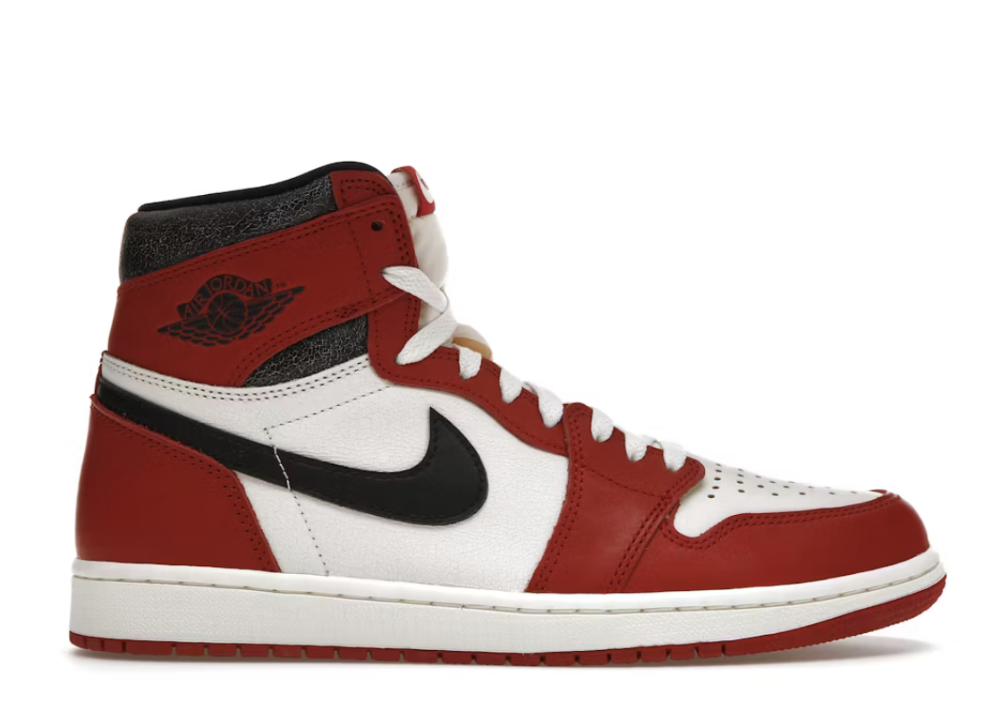

Air Jordan 1 – Absolutny klasyk bez czasu
Air Jordan 1 High, debiut z 1985 roku zaprojektowany przez Petera Moore’a, to nie tylko buty – to rewolucja, która zmieniła sneakersy na zawsze. Wszystko zaczęło się od legendarnego kontraktu Nike z Michaelem Jordanem w 1984 r. – 2,5 mln USD na 5 lat plus procent od sprzedaży z jego nazwiskiem. MJ początkowo wolał Adidasa, ale Nike zaoferowało mu własną linię. Pierwsze AJ1 miały wysoką cholewkę z wysokiej jakości kangaroo leather, perforowaną dla wentylacji, Nike Air w podeszwie dla amortyzacji i ikoniczne Wings logo na pięcie – symbol lotu ku zwycięstwu. Czarno-czerwona kolorystyka “Bred” (Black/Red) złamała surowe reguły NBA co do 51% białego koloru na butach, co kosztowało Nike 5 tys. USD kary za każdy mecz Jordana – genialny, darmowy marketing, który podbił media! Sprzedaż w pierwszym roku osiągnęła 126 mln USD, miażdżąc prognozy 3 mln na 4 lata.
Kulturowo AJ1 stały się symbolem buntu: od chicagowskich ulic, przez parkiety NBA, po globalny streetwear i hip-hop. Michael Jordan w nich grał swój rookie season z Bulls, zdobywając średnio 28,2 pkt/mecz. Popularne warianty to “Chicago” (biało-czerwone), “Royal” (niebiesko-czarne), “Shadow” (szaro-czarne) i liczne collaby jak Travis Scott czy Off-White. Technicznie: gumowa podeszwa z pivot point dla trakcji, trwałe sznurowadła i konstrukcja High/Mid/Low dla różnych stylizacji. Dziś retro wydania jak “Patent Bred” biją rekordy na StockX – ceny od 200 do 2000 USD. Idealne na co dzień, do jeansów, szortów czy kolekcji sneakerheadów. Wszechstronne, wygodne, niezniszczalne – must-have dla każdego fana Jordana. Kup retro dla autentyczności, dbaj o czystość szczoteczką i impregnatem. Jordan 1 to fundament dynastii – ponad 35 lat na topie, inspirujący pokolenia od playgroundów po fashion weeki. Nie buty, a kawał historii w Twojej szafie!
